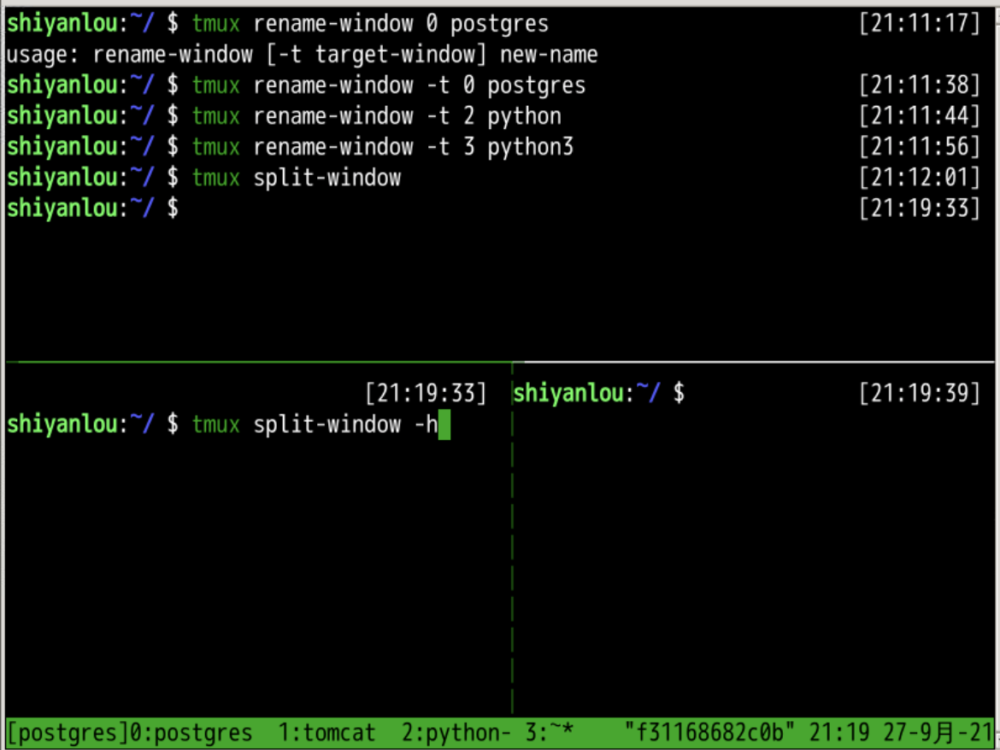
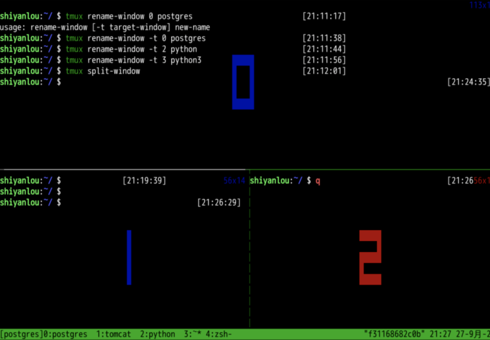
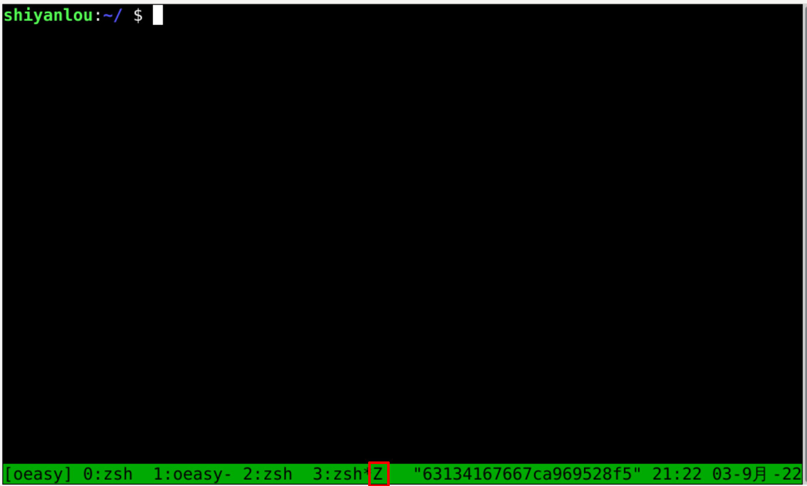
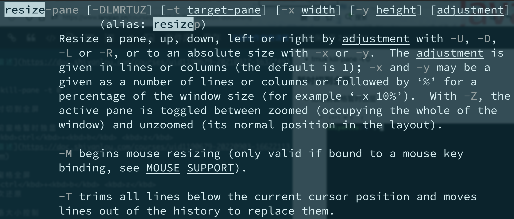
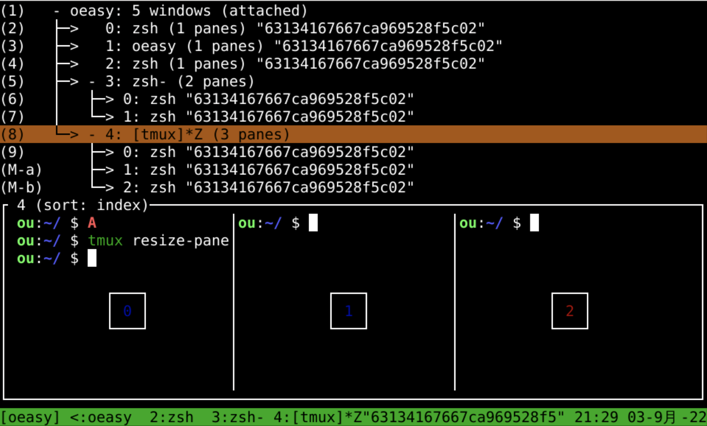

分屏工具tmux
回忆
- 新建窗口
- tmux new-window -n window_name
- 切换窗口
- ctrl+b 数字
- 关闭当前窗口
- ctrl+b c
- tmux kill-session -t session_name
- 会话窗口
- tmux rename-session -t old new
- ctrl+b $
- 窗口管理器
- ctrl+b s

- 窗口下面还有什么？🤔
- 下次再说！👋🏻
pane窗格
- tmux split-window 上下分开
- tmux split-window -h 左右分开

- 使用快捷键的方式
- ctrl+b " 上下分开
- ctrl+b % 左右分开

- 窗格之间如何切换呢？
窗格切换和关闭
- ctrl+b 方向键 切换窗格
- ctrl+b x 关闭窗格
-
ctrl+b ! 只留当前窗格
-
如果要用命令的方式
- 窗格关闭
- 怎么办呢？
窗格关闭
- ctrl+b q 列出窗格pane标号

- tmux kill-pane -t 0
暂时切到全屏
- 把当前窗格暂时独显
- ctrl+b z

- 当前窗格全屏
- ctrl+b z
- 再一次还原
- 和只留当前窗格不同
- ctrl+b ! 只留当前窗格
窗格大小控制
- ctrl+b ctrl+方向键
- 移动当前窗格pane边界
- 这可能和快捷键冲突

- ctrl+b alt+方向键
- 以5为单位移动当前窗格pane边界
其他好玩的
-
列出所有快捷键，及其对应的 Tmux 命令
- tmux list-keys
-
列出所有 Tmux 命令及其参数
- tmux list-commands
-
列出当前所有 Tmux 会话的信息
- tmux info
-
重新加载当前的 Tmux 配置
- tmux source-file ~/.tmux.conf
窗格管理器
- ctrl+b s 会话管理器
- ctrl+b w 窗口管理器

- 可以用方向键打开窗格
总结 🤨
- 我们这次使用了tmux
- tmux连接不同服务器可以有不同的session
- 同一个session里面可以有多个窗口window
- 同一个window里面可以有多个窗格pane
- 同一个session里面可以有多个窗口window
- 只用新建和切分window就够用了
- ctrl+b c新建窗口
- ctrl+b %或"拆分窗格pane
- ctrl+b 方向键选择窗格pane
- ctrl+b x 关闭窗格pane
- 还有什么好玩的么？🤔
- 下次再说！👋